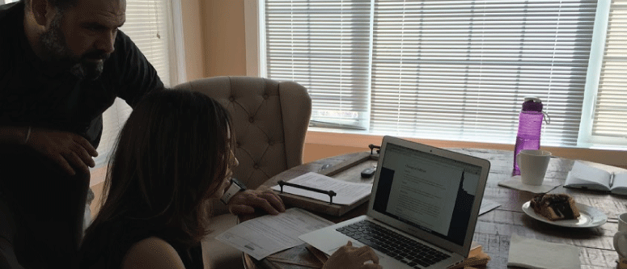
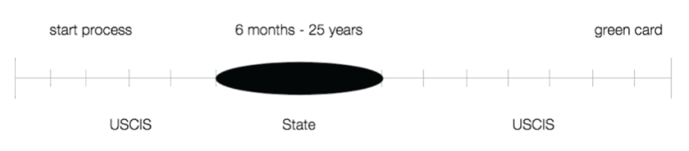
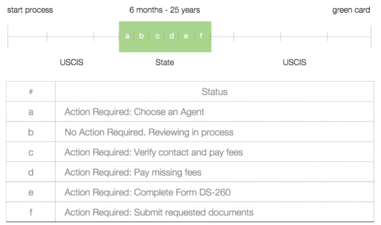
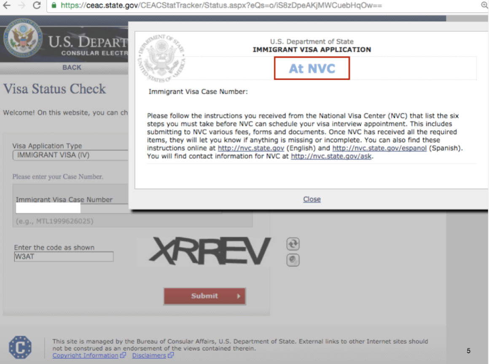
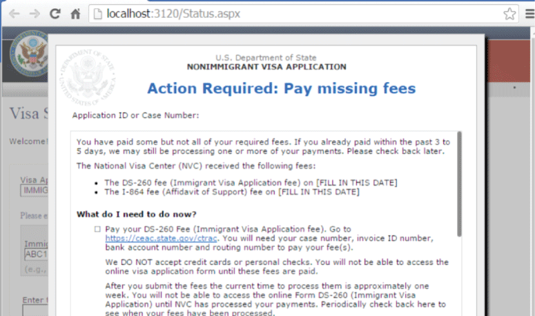
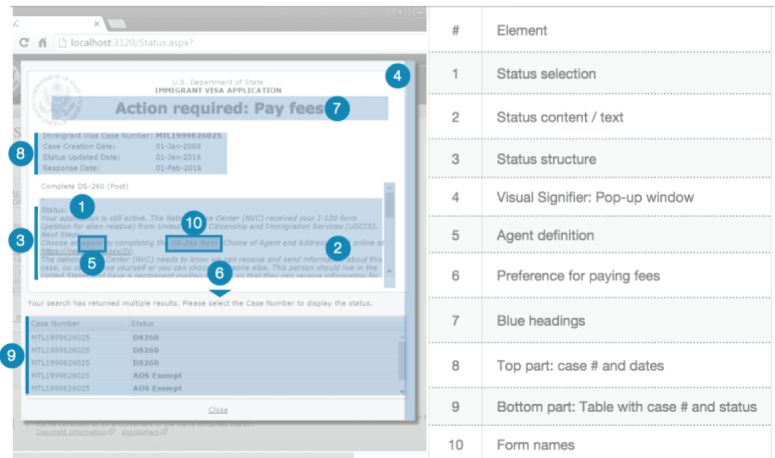
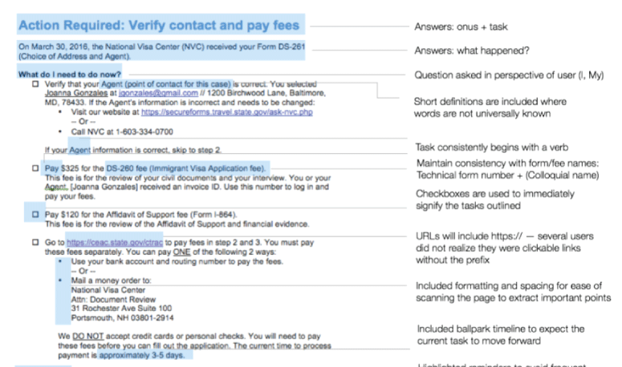
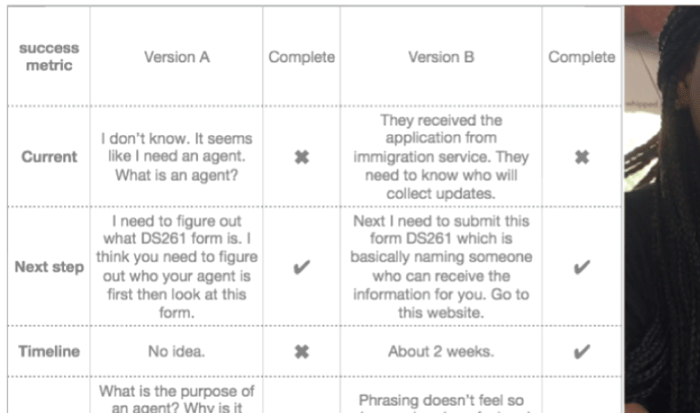
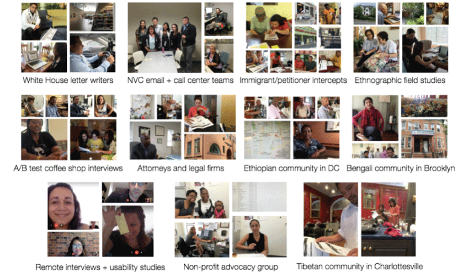

Project background: The project was a continuation of a previous team's exploration in the immigrant visa space. Our State Digital Service team focused on narrowing down a project that would have the biggest impact on the most number of people with a reasonable execution plan.
Project selection criteria:
- Can produce an implementation plan in 2 weeks
- Can achieve an MVP in 3 months
- High and measurable impact to users
- Number of users
- Burden on NVC staff
- Application time
- Government fees
- Preparation expenses
- User pain
- User error
- Makes use of team strengths
- Cross-agency collaboration
- Design and engineering experience
- Has a reasonable long-term support plan
- Demonstrates the value of modern development practices
- Aligns with agency priorities
Problem statement:
Visa applicants are confused by the timeline of the visa process (see screenshot above) and it is difficult for them to understand what they are required to do next to advance their visa application.
- 9,000 calls from users to the visa center each day
- 3 minute average call duration
- 30 minute average wait time
- 80% of calls relate to status

Result: the statuses we created:
- Be transparent: clearly communicate stage and help set time expectations
- Be actionable: offer next steps and encourage updates of critical information and display options for help like phone, email, links, etc.

Before

After

Engineering effort: The engineers on our team were working in tandem with design to ensure positive outcomes for development as well.
- Introduce modern development practices and environment to mitigate risk of release
- Simplify code for easier handoff
- Fix user-facing errors in existing tool
Usability study findings: We discovered that based on the screens we tested, the page could break down into 10 different sections. From those sections, we gathered key insights and iterated on those portions in order to improve the usability of the page.

Content strategy findings: In addition, after talking to dozens of immigrants, petitioners, advocacy groups and legal organizations, we learned how to structure statuses to improve accessibility for our users. The image below highlights certain pain points, triggers, or elements of success that helped users get important information to be able to move forward with their task.

Methods
- Ethnographic field studies (DC, Maryland, Brooklyn, Charlottesville)
- A/B test usability studies at coffee shops
- User interviews
- Observing users navigate current government websites relating to visa status checking
- Reaching out to White house letter writers
- Intercepts: immigrants and petitioners
- Remote usability studies
- Remote user research interviews

Users we met with:
- 12 immigrants (current citizens, speaking about their previous experience
- 24 petitioners
- 5 people from advocacy groups and organizations
- 7 lawyers and immigration legal firms
- 14 immigrants from an Ethipopian community in DC
- 12 immigrants from a Bengali community in Brooklyn
- 5 immigrants from a Tibetan community in Charlottesville
- Several team members from the National Visa Center's call center and written correspondence teams

Success metrics:
- Short term: Greater understanding of their case and what to do next
- Medium term: Decrease in number of calls to NVC checking status
- Medium term: Increase in average duration of calls to NVC about immigrant visa status because simple status checks are handled by the webbsite
- Long term: Fewer user erros in the process (expiration, change of contact info, etc.)
- Long term: Reduction in time for each case where the action is on the user
- What's next: Evaluate and iterate based on user feedback
Outcomes: The project took 9 months from inception to project launch. Challenges that have come up and delayed the process include:
- multiple phrase and wording edits from various departments at the agency
- getting translations done for 10 countries (and then having to re-translate 3 more times due to updates)
- not being familiar with the deployment process and having to resubmit requirements
- and many other mistakes we made or were unaware of accounting for.
To date, the visa status checker tool and the new statuses are now being using in countries all over the world.